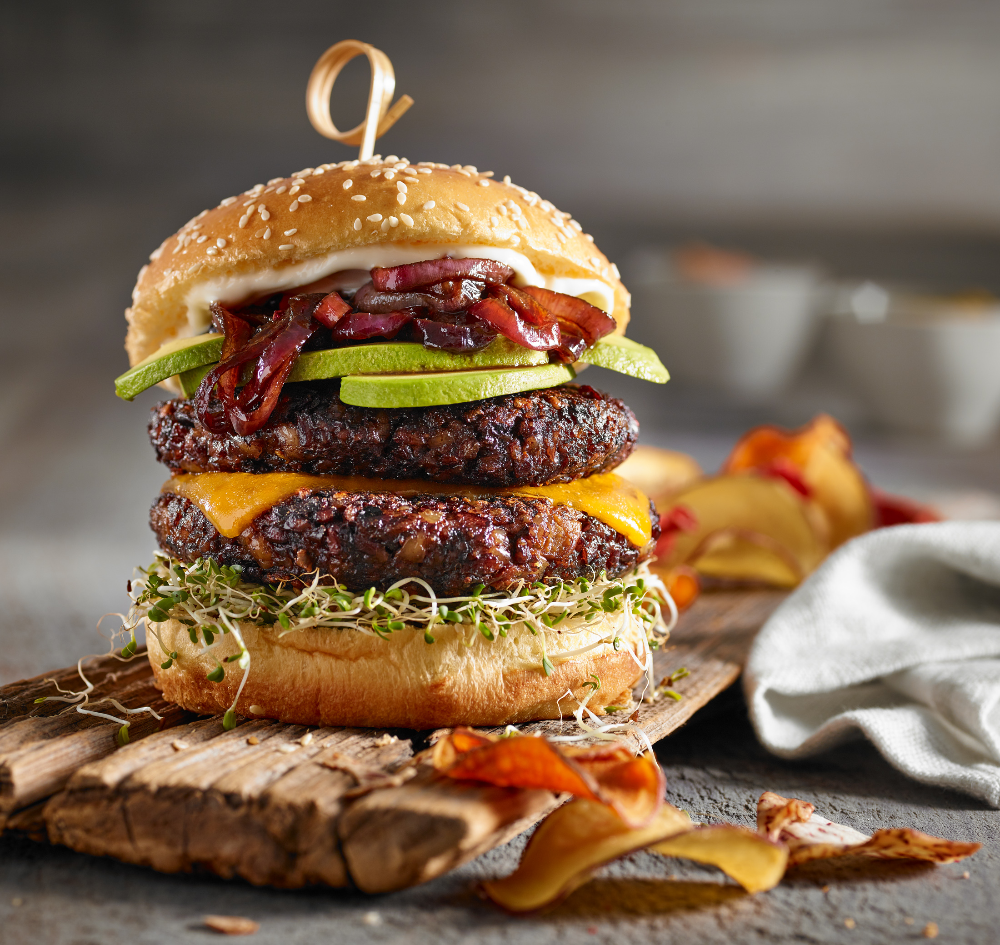
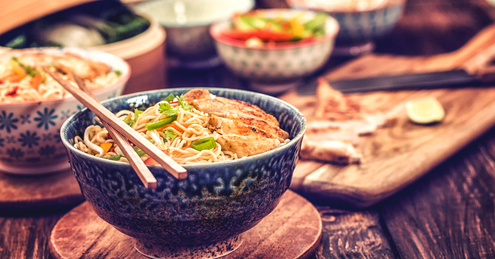
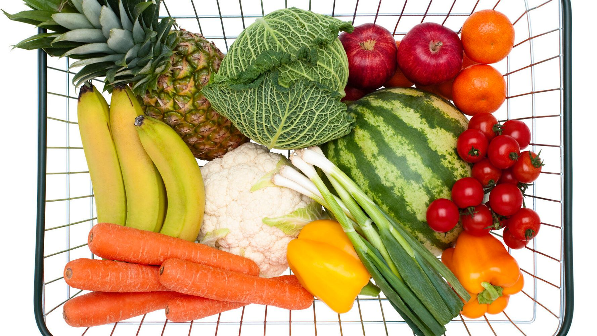
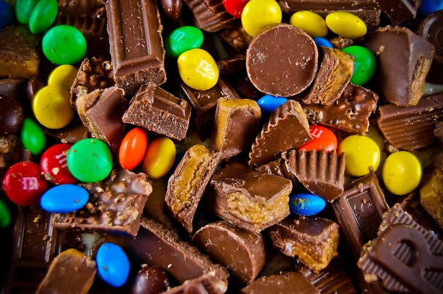

Food makes you happy!
Food is life!
World Cuisine
European
Asian
Mediterranean

Subscribe to get 10% off on first purchase item! Enter your email
address

Feta-Stuffed Hamburgers
These quick homemade hamburger burger buns bake up beautifully, with a
sturdy bottom that stands up to whatever you can pile on, but with an interior texture that's surprisingly
light.

All Natural Ramen Noodles
I've tried those make-your-own ramen seasoning recipes, but they taste
nothing like ramen in my opinion. This recipe hits the spot, and there is no MSG or artificial ingredients.

Sweet and Sour Veggies
This great salad is very easy to prepare, and can be made the night
before serving. You can use just about any fresh veggies.

White Chocolate, Chocolate Cookies
The reverse Chocolate Chip cookie. Rich dark chocolate with white
chocolate chips.
Feta-Stuffed Hamburgers
These quick homemade hamburger burger buns bake up beautifully, with a
sturdy bottom that stands up to whatever you can pile on, but with an interior texture that's surprisingly
light.
All Natural Ramen Noodles
I've tried those make-your-own ramen seasoning recipes, but they taste
nothing like ramen in my opinion. This recipe hits the spot, and there is no MSG or artificial ingredients.
Sweet and Sour Veggies
This great salad is very easy to prepare, and can be made the night
before serving. You can use just about any fresh veggies.
White Chocolate, Chocolate Cookies
The reverse Chocolate Chip cookie. Rich dark chocolate with white
chocolate chips.